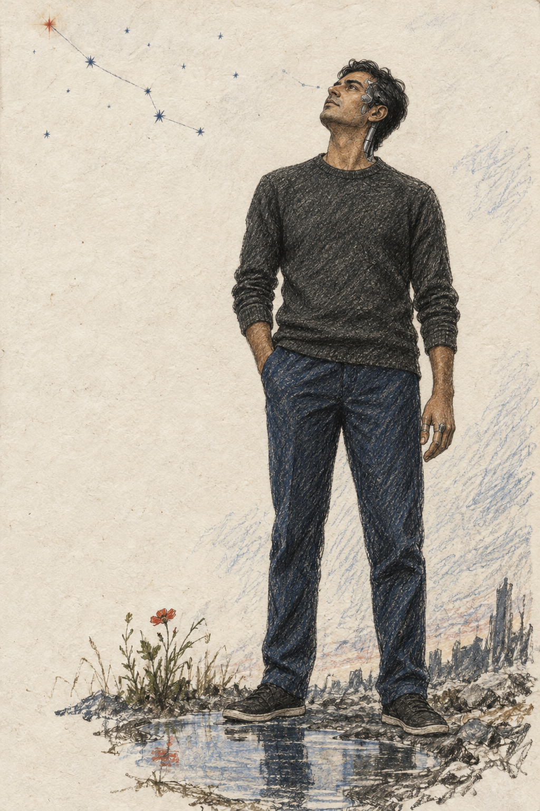
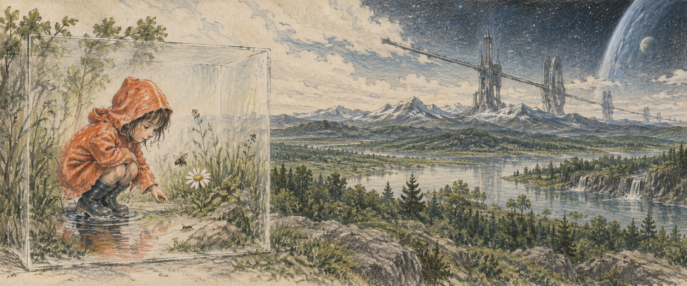
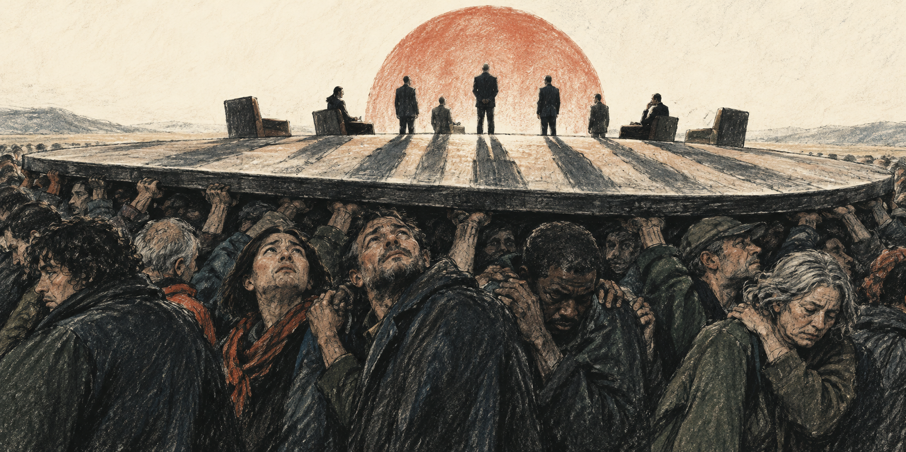

01THE TECHNOLOGIST
The Light Bringer


02THE OTHERS
The Others
READ BENEATH THE SURFACE
A poem is a
lossy compression.
Below are some of my thoughts and choices that went into creating the two poems above:
Explore the reading notes